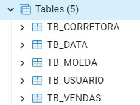
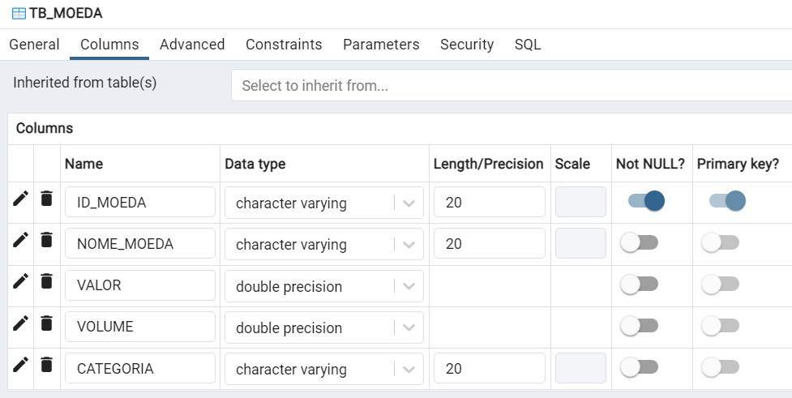
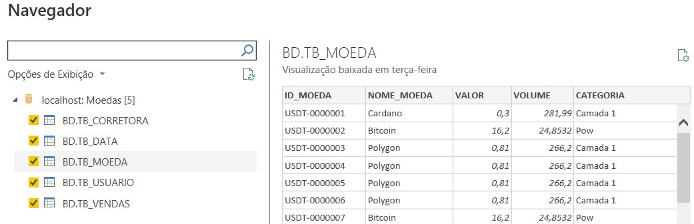
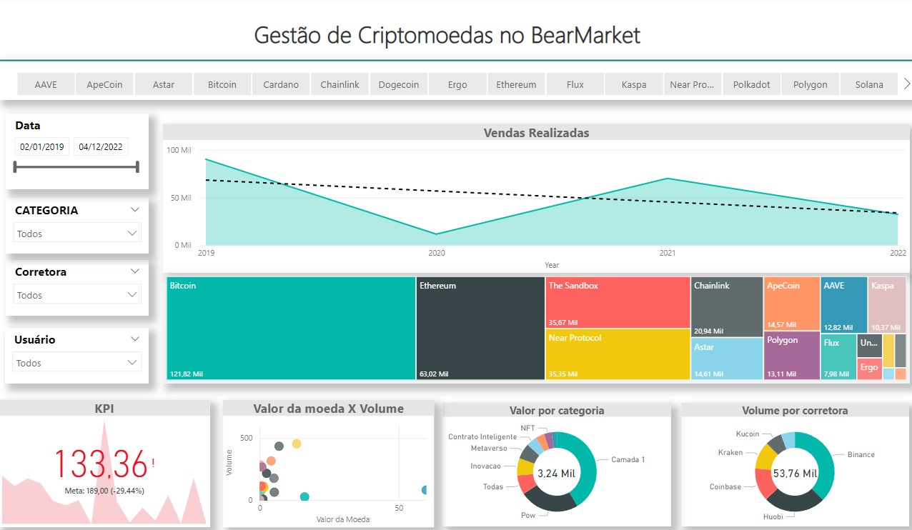

Business Intelligence é um conceito que envolve técnicas, ferramentas e procedimentos para transformar dados brutos em informação.
O Power BI permite que pessoas sem conhecimento técnico avançado possam realizar análises em dados.
Para trabalhar de forma eficiente e profissional com o Power BI, pode ser necessário criar um modelo de organização dos dados.
Esse modelo permite realizar análises por diferentes ângulos, sob demanda eorientada à solução dos problemas de negócio
Data Warehouse (DW), é um banco de dados que serve de fonte para processos de BI.
As tabelas e colunas foram criadas diretamente no banco e a importação dos dados foram feitas de planilhas
 Foi preciso detalhar o tipo do dado para completar o processo de ETL .
Última etapa para obter os dados para análise.
Diversas possibilidades de análises quantitativas e qualitativas podem ser realizadas
